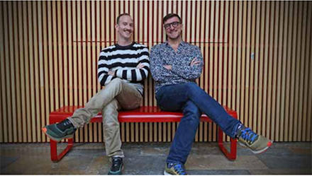

Charente-Maritime
La vie d'artiste stoppée net
Jonathan Pranlas-Descours et Christophe Béranger de la compagnie Sine qua non art. ARCHIVES J.-CH. S
Et les artistes dans tout ça ? Que deviennent-ils, tous ces comédiens, danseurs, musiciens que l'on va applaudir toute l'année mais parfois encore plus l'été, au moment des festivals et des tournées sur les routes de France ? L'annulation des petits comme des grands rendez-vous culturels a jeté la sidération et balayé tous les projets. Des reports mais à quand ? Aujourd'hui, personne ne sait encore quand rouvriront les théâtres pour jouer ou répéter une création... Privés de scène, les artistes sont aussi privés de leurs heures d'intermittences qui ouvrent leurs droits à l'allocation chômage. Dans un secteur déjà précaire, l'inquiétude est grande.
"J'ai monté un portique dans le jardin, je fais de la corde, du training, du yoga. Mais c'est très limité. En temps normal, je serais allée m'entraîner à l'école de cirque de Châtellerault et, à l'heure où l'on se parle, je devrais être à Montreuil pour jouer "Comme un vertige". Là, physiquement, on ne serait jamais prêt si on devait partir en tournée."
La Rochelaise Louise Faure, à la tête de la compagnie de cirque Avis de tempête, est partie se confiner à la campagne. Une maigre consolation. Pour la circassienne, le confinement emprisonne autant l'esprit que son corps de voltigeuse. Au lendemain des annulations de festivals et de la fermeture des lieux de spectacles, la compagnie rochelaise a dû tout annuler jusqu'à la mi-juillet : quinze dates de tournée et une résidence de création de deux mois.
Elle a fait le choix de mettre ses quinze intermittents du spectacle en chômage partiel en avril et mai "pour tenter de sauver les statuts". Mais depuis quelques temps, cette chef de bande doit aussi rassurer, informer, décoder les nouveaux dispositifs et les décrets qui changent chaque jour. "Il faut garder le lien avec toute l'équipe parce que certains sont très affectés."
Aucun cachet
Christophe Béranger et Jonathan Pranlas-Descours, à la tête de la compagnie rochelaise Sine qua non art, auraient dû danser deux soirs, fin avril, sur la scène du théâtre de Chaillot à Paris. Une occasion rarissime offerte à une petite compagnie de danse contemporaine de province... " C'était une formidable vitrine. Aujourd'hui, la création serait reportée à l'automne... 2022. Malgré l'annulation, Chaillot nous a payé nos deux représentations ", se console Christophe Béranger. Mais le chorégraphe, aussi intermittent du spectacle, est très inquiet. Il se prépare à ne toucher aucun cachet pendant plusieurs mois. La compagnie de danse, très investie sur la scène internationale, a dû stopper tous ses projets avec Rome, Lisbonne ou encore le Guatemala. Elle a annulé quinze dates et avait commencé à mobiliser douze danseurs, un plasticien, un éclairagiste... pour sa prochaine création.